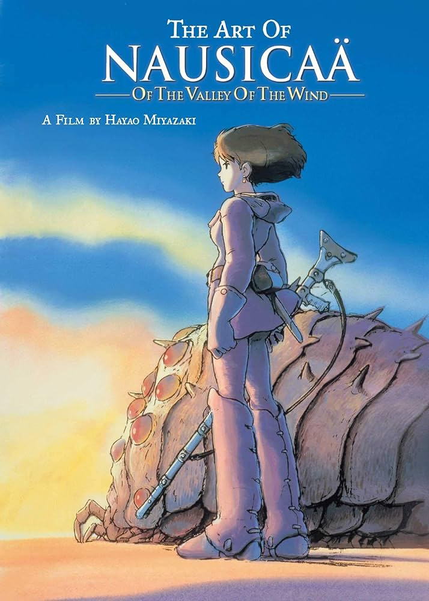

Historia e Progresso
“O Quente Vento do Deserto do Saara”. Para muitos, essa frase pode não fazer sentido algum, mas para Hayao Miyazaki, esse vento que se chama Ghibli seria aquele mudaria para sempre a história da animação mundial. Graças ao sucesso alcançado por Nausicaä do Vale do Vento em 1984, no ano seguinte, em 1985, nascia o Studio Ghibli. Sua história, porém, começa 30 anos antes com o encontro de Hayao Miyazaki e Isao Takahata, futuros pais do estúdio. Em 1974 os dois se encontravam durante a produção de um anime de grande sucesso no mundo inteiro – inclusive no Brasil – Heidi. Enquanto Isao Takahata dirigia as séries, Hayao Miyazaki fazia um trabalho sobre-humano para conseguir desenhar o layout de cada episódio detalhadamente. Isso fez com que os dois percebessem que para fazer as animações de alta qualidade, como desejavam, precisariam de um tipo de mídia onde os prazos não fossem tão apertados como são nas séries de televisão. Foi assim que surgiu a ideia da criação de um estúdio para produzir filmes cuidadosamente desenhados, com enredo e qualidade impecáveis, e o mais importante, de seu próprio jeito.

voltar